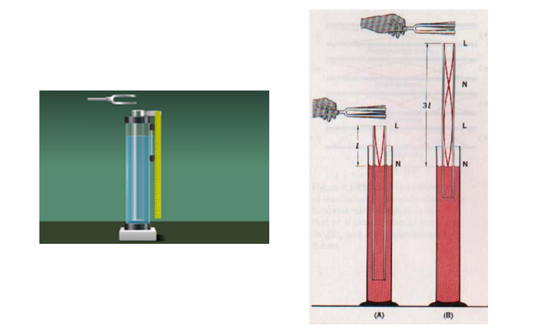

To determine the velocity of sound in air at room temperature using resonating apparatus.
The apparatus is a closed organ pipe.If L1 and L2 are the first and second resonating length of the air column then
\(L_{1}+e=\frac{\lambda }{4}:\, l_{2}+e=\frac{3\lambda}{4}\)
Where '\(\lambda\)' is the wave length:'e' is the end correction
\((L_{2}-L_{1})=\frac{3\lambda }{4}-\frac{\lambda }{4}=\frac{\lambda }{2}\)
\(\lambda =2(L_{2}-L_{1})\)
'n' is the frequency of the resonating air column which is determined by resonance method.
\(V=n\lambda :V=2n(L_{2}-L_{1}):V\, gives\, the\, velocity\, of\, the\, sound\, in\, air.\)
The apparatus consists of a glass tube PQ of length nearly 1 meter and of diameter about 4cm,fixed to a vertical wooden stand as shown in the figure.The bottom of the tube is connected to a reservoir R by a hard rubber tube.There is a provision to move the reservoir vertically upwards or vertically downwards or to fix at any desired position.
The apparatus consists of a metal tube PQ of length nearly 1 meter and of diameter about 4cm along with a transparent side tube AB connected at its bottom. The water in the metal tube and that of in side tube Ab are at same level.Hence the water level can be noted from AB.These are fixed to a vertical wooden stand as shown.The bottom of the tube is connected to a reservoir R by a hard rubber tube.There is a provision to move the reservoir vertically up or down or to fix at any desired position.
Water is taken in the tube PQ along with reservoir.The water level in the tube can be changed by moving the reservoir vertically.Thus the length of the air i the tube PQ can be changed.A meter scale is fixed by the side of the tube,so that the zero of the scale coincides with the upper edge of the tube.This helps to measure the length of the air column by nothing the water level in the tube.
The reservoir R is adjusted so that the glass tube is filled with water.A tuning fork of known frequency n1 is excited with a rubber hammer.The vibrating tunning fork is held horizontally above the tube so that the prongs vibrate in the vertical plane.The length of the air column increased gradually by moving down the reservoir.It is seen that the fork maintains the vibrations during this change. If at a particular length of air column a booming sound is heard.This is due to resonance now the of the air column is equal to that of the fork.At this position the reservoir is clamped and the length 'L1' ofthe air column is measured by noting the level of the water in tube.The procedure is repeated again the resonating length is determined.The average of the length L1 is calculated
The length of the air column is further increased by moving the reservoir downward untill the booming sound time.The reservoir is clamped when the booming sound is maximum and then the length of the air column is measured.This procedure is repeated and again the length of the air column is determined.The average of the two length L2 gives the second resonating length for the same tuning fork.
Using the formula V=2n(L2 -L1) the velocity of the sound in air is calculated.
The procedure is repeated for different fork and the readings are tabulated.The velocity of the sound is determined in each case and the average velocity of sound at room temperature vt is calculated.
Using the formula \(v_{0}=v_{t}[1-\frac{t}{546}]\).The velocity at 00C V0 is calculated. Knowing the room temperature."t".